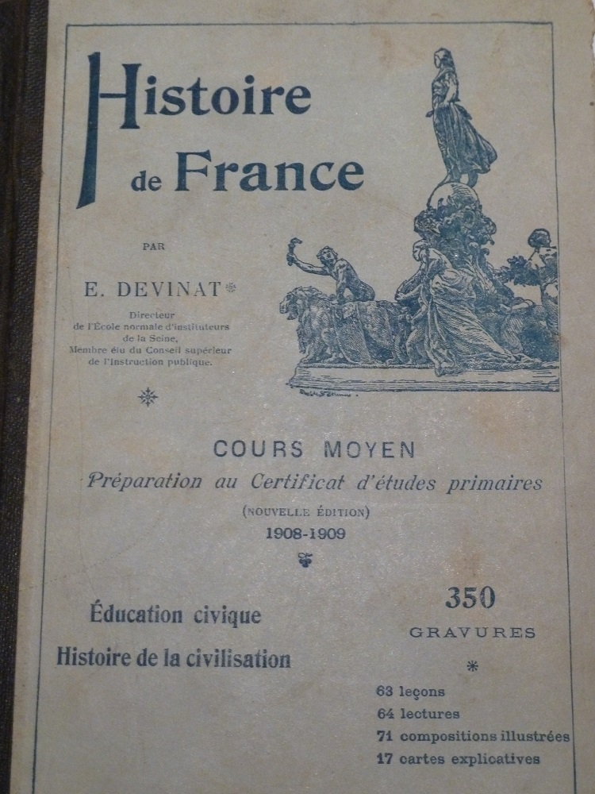

Augustine, Maria et Léa

Livre d'école d'Augustine
Augustine et Léa
Sœurs jumelles, Augustine et Lea sont les plus jeunes. Elle sont nées le 10 Janvier 1902 au hameau des Raynauds, commune de la Crouzille. La différence d’âge avec leurs frères et sœurs est significative. Elles ont douze ans au
moment où la guerre éclate et portent donc un regard d’enfant sur cette période.
Elles viennent en fait de passer leur certificat d’études primaires et sont donc de retour à la ferme. Elles commencent tout juste à participer aux travaux des champs et corvées quotidiennes.
Leur correspondance avec les frères est pleine de tendresse et elles semblent avoir une relation particulière avec chacun d’entre eux.
Les lettres les plus émouvantes sont avec Gabriel, le très grand frère pour qui elles ont une véritable adoration et qu’elles surnomment Dodole. Mais elles sont également très proches des deux jumeaux - Augustine est la
fillieule d’Auguste, Léa est la fillieule d’Antoine – et chaque fois que l’un des jumeaux envoie une carte à l’une d’elles, il prend bien soin d’envoyer également une carte à sa sœur.
Dans les années suivant la guerre, Augustine ne se mariera pas et restera à la ferme avec les deux sœurs aînées mais Léa épousera Louis, un autre paysan du coin et s’installera à Chez Sivade, un autre hameau de La Crouzille.
Tristement, Léa s’éteindra trop tôt à l’âge de 50 ans et je n’ai jamais connu ma grand-mère.
La conclusion du livre d'histoire d'Augustine et Léa à l'aube de la guerre :
"... Aussi tout le monde s'est armé jusqu'aux dents et chacun fait peur à l'autre. Il en résulte une ruineuse paix armée à laquelle on se résigne, faute de pouvoir s'entendre pour un désarmement général, et parce que personne n'ose affronter le scandale et les dangers d'une grande guerre européenne."